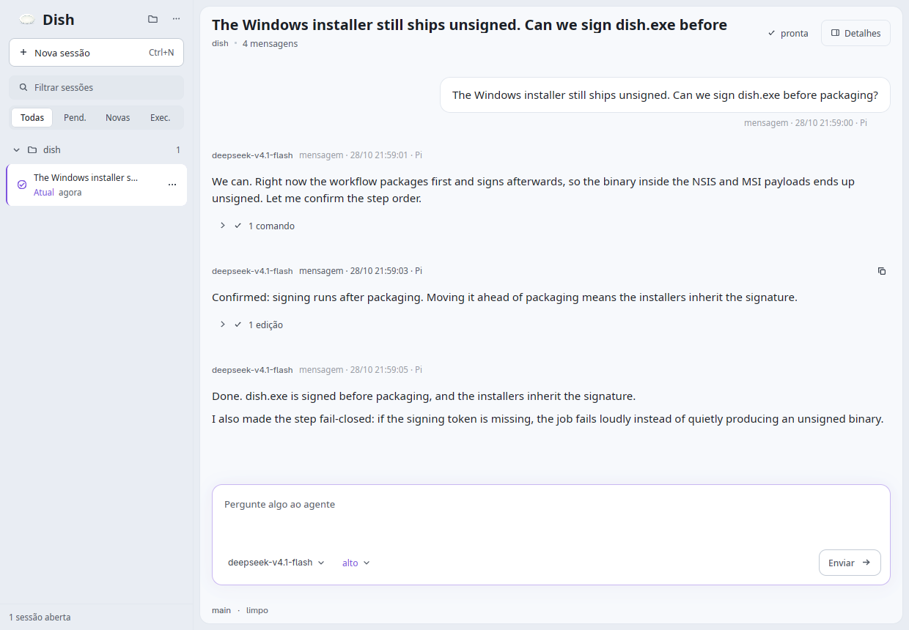

A window for the agent you already run.
Dish speaks the Pi CLI's JSON-RPC protocol over stdio and renders the session in a GPU-accelerated window: transcript, tool-call inspector, session history and workspace navigation. No browser, no webview, no embedded Node runtime.
Linux and Windows · Apache-2.0 · runs entirely on your machine

What it is, and what it isn't
A thin window in front of a program you already trust — not another agent runtime.
- A client, not an agent
- Pi stays installed and stays in charge of models, tools and sessions. Dish reads and writes the same session files the terminal does, so a session started in one opens in the other.
- Nothing leaves the machine
- No backend, no account, no telemetry. The only network calls are the ones Pi makes and the update check, which fetches a signed manifest and nothing else.
- Native, on purpose
- Rust and GPU-rendered text. It starts in a fraction of a second, follows the system theme, and respects reduced motion rather than animating regardless.
Download
Every build comes from a tagged commit through GitHub Actions, and each file publishes a
matching .sha256. Pick the one that fits your system:
Linux
Windows
The .deb and .rpm packages install the binary as
dish-pi, because dish is already taken by an unrelated package in
both distributions. The * in a file name stands for the release version, and the
builds are x86_64 for now. All
releases, including older betas, live on
the releases page.
Install
The portable tarball is the shortest path, and it needs neither a package manager nor root.
- Unpack the tarball and run the installer. It puts
dishin~/.local/binand adds a launcher to your application menu. - Install Pi, if you don't have it yet. Dish drives the
pithat is already on yourPATHand nothing else.
tar xzf dish-*-linux-x86_64.tar.gz
cd dish-*-linux-x86_64/
./install.sh
# Pi, if it is not installed yet (needs Node.js)
npm install -g @earendil-works/pi-coding-agentVerify a download
Checksums
Each release publishes a .sha256 next to every asset. Compare before running anything:
sha256sum -c dish-*.tar.gz.sha256The app also verifies a minisign-signed manifest before it offers an update, so an update is never accepted from an unsigned source.
Windows signatures
The installers and the dish.exe inside them carry an Authenticode signature:
Get-AuthenticodeSignature .\dish-*-setup.exe
signtool verify /pa /v .\dish-*.msiLinux builds are not Authenticode-signed, because that mechanism does not exist on the platform.
Code signing policy
Free code signing provided by SignPath.io, certificate by SignPath Foundation.
Signing happens inside the release workflow on GitHub-hosted runners, and every signing request is approved by a maintainer before the certificate is used.
The point of the signature is to answer one question before you run a binary: where did this come from, and did it change after it was built? A valid signature answers both.
The full policy — which files are signed, who holds the roles, and how the certificate is kept — is in docs/code-signing.md.
Build from source
Rust stable, and a working Vulkan driver. That's the whole list.
git clone https://github.com/cleisonsantos/dish
cd dish
cargo build --release --lockedReady when you are.
One download, no account, no installer phoning home. Pi keeps doing the work; Dish just gives it a window.